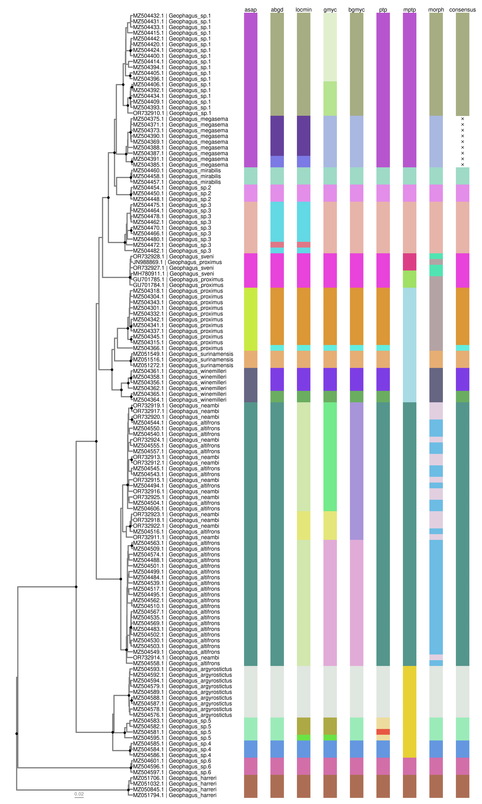

IMPORTANT
This software is under active development, and as such cannot be assumed to be free of bugs or poor functionality. Always inspect results carefully. If you find a problem, please report it with as much detail as possible in Issues. Unfortunately in it’s current form, some of the functions (abgd_tbl(), asap_tbl() and mptp_tbl()) will not work on Windows operating systems, only on Unix (MacOS, Linux). This is because third party binaries (executable programs) are required. We are working to implement importing results from the webservers that are commonly used to run these analyses. There are also difficulties with installing R required package dependancies to run gmyc_tbl() and bgmyc_tbl() because these are no longer under development and available on CRAN, and must be installed from archived sources. Please refer to github.com/boopsboops/delimtools-testing for instructions on how to install.
Overview
The official GitHub repository for the R package delimtools (Bittencourt et al., in prep.).
delimtools provides helper functions for the analysis of single-locus species delimitation methods such as GMYC (Monaghan et al., 2009), bGMYC (Reid & Carstens, 2012), mPTP (Kapli et al., 2017) and ASAP (Puillandre et al., 2020). These software run multiple different platforms (e.g. R, Unix, webservers), and also do not output their results in a consistent format to allow easy comparison. To address these shortcomings we have developed a suite of functions to standardise and simplify generating single-locus species delimitations.
Dependencies
Delimtools mainly depends on the tidyverse and ggtree packages. To install these, run the command lines below:
Install tidyverse:
install.packages("tidyverse")Install ggtree
if (!require("BiocManager", quietly = TRUE))
install.packages("BiocManager")
BiocManager::install("ggtree")Installation
To install delimtools you may execute the following commands. We recommend the usage of the latest CRAN release always.
Latest stable version from CRAN
install.packages("delimtools")Development version from GitHub:
devtools::install_github("LegalLab/delimtools")Or a specific version via renv:
renv::install("LegalLab/delimtools@v0.1.0")Examples
Here, we will demonstrate a single-locus species delimitation analysis on a Geophagus eartheater cichlid dataset (Ximenes et al., 2021) using a variety of methods. For full details please see the GitHub repository accompanying this R package at github.com/boopsboops/delimtools-testing.

library(delimtools)
library(dplyr)
# make tip label table
tip.tab <- geophagus_info |>
filter(gbAccession %in% geophagus_beast@phylo$tip.label) |>
mutate(labs= glue::glue("{gbAccession} | {scientificName}")) |>
select(gbAccession, labs, scientificName)
# get cols
cols <- delim_brewer(delim= geophagus_delims, package="randomcoloR", seed=42)
# plot
delim_autoplot(delim = geophagus_delims,
tr = geophagus_beast,
consensus = TRUE,
n_match = 4,
delim_order = c("asap","abgd","locmin","gmyc","bgmyc","ptp", "mptp","morph"),
tbl_labs = tip.tab,
col_vec = cols,
hexpand = 0.7,
widths = c(0.5, 0.5))
Meta
- Please report here any issues or bugs or suggestions.
- License: MIT.
- Get citation information for
delimtoolsin R by runningcitation(package='delimtools').